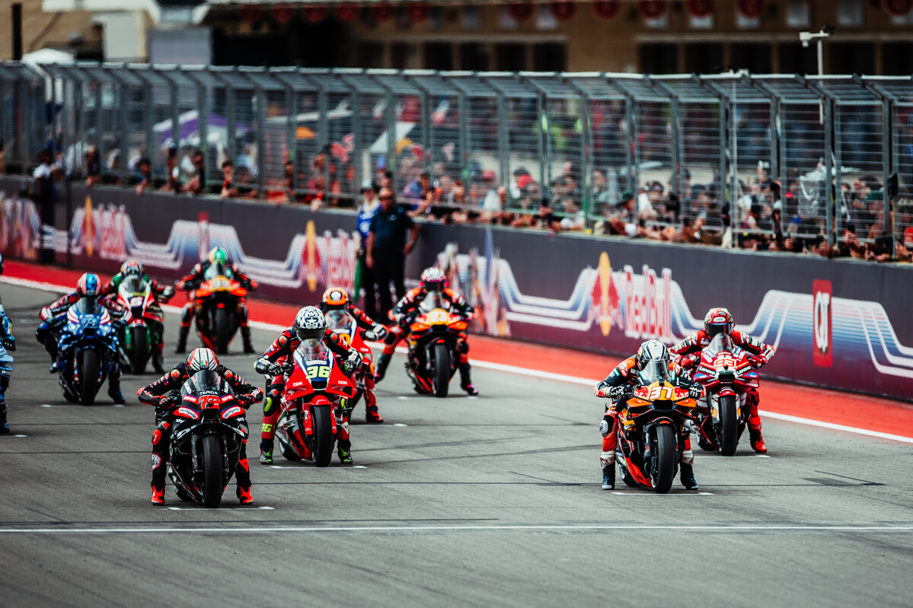

O Grande Prêmio do Japão ocupa uma posição especial no calendário da MotoGP. Além de ser disputado em um dos países mais importantes para a indústria mundial de motocicletas, Motegi oferece um tipo de desafio bastante particular: acelerações fortes, zonas de frenagem pesada e trechos em que a estabilidade da moto pode valer tanto quanto a velocidade pura.
Em 2026, esse cenário ganha uma importância adicional. A corrida acontece na reta final do campeonato, com Martín e Márquez diretamente envolvidos na liderança, Marco Bezzecchi ainda próximo e Pedro Acosta chegando embalado pela primeira vitória da carreira na categoria principal.
O GP do Japão é a 16ª etapa efetivamente disputada da temporada 2026 e marca o início da sequência asiática e oceânica da MotoGP. Depois de Motegi, o campeonato segue imediatamente para a Indonésia, antes das passagens por Austrália e Malásia e da parte final do calendário.
A situação do campeonato antes da largada em Motegi mostra o equilíbrio na frente:
- Jorge Martín — Aprilia Racing — 306 pontos
- Marc Márquez — Ducati Lenovo Team — 294 pontos
- Marco Bezzecchi — Aprilia Racing — 264 pontos
- Pedro Acosta — Red Bull KTM Factory Racing — 234 pontos
- Fabio Di Giannantonio — VR46 Racing Team — 230 pontos
Martín x Márquez coloca o título no centro das atenções
A disputa entre os dois pilotos é o principal componente competitivo da etapa japonesa. Martín recuperou a liderança do campeonato durante o GP da Áustria e ampliou a vantagem no domingo ao terminar em segundo, enquanto Márquez cruzou a linha na quinta posição.
Os dois chegam a Motegi com campanhas diferentes em 2026. Martín soma uma vitória em Grandes Prêmios e sete pódios. Márquez conquistou cinco vitórias em corridas principais, todas as vezes em que subiu ao pódio aos domingos na temporada até este momento.
Isso torna cada sessão importante. A MotoGP distribui pontos tanto na Sprint de sábado quanto no Grande Prêmio de domingo, de modo que um fim de semana pode provocar mudanças significativas na classificação. Com somente 12 pontos separando os dois primeiros, Motegi pode alterar novamente a liderança da disputa pelo título.
Bezzecchi continua no alcance e Acosta chega em alta
Marco Bezzecchi também permanece como personagem importante da disputa. O italiano da Aprilia chega ao Japão com nove pódios em Grandes Prêmios na temporada. A diferença de 42 pontos para Martín não pode ser eliminada em uma única etapa, mas mantém Bezzecchi dentro da disputa matemática na reta final.
Pedro Acosta aparece um pouco mais distante na classificação, mas atravessa seu melhor momento dentro da categoria. O espanhol conquistou no Red Bull Ring, em setembro, sua primeira vitória em uma corrida principal da MotoGP. Antes de Motegi, vinha de cinco resultados consecutivos dentro do top 5, incluindo três pódios seguidos.
Há ainda um nome naturalmente cercado por atenção no Japão: Ai Ogura. O piloto japonês voltou à competição na Áustria com dois quartos lugares, considerando Sprint e corrida principal, e chega à etapa de casa depois de mostrar ritmo competitivo imediatamente após o retorno.
Como é o circuito de Motegi
A pista tem 4,8 quilômetros de extensão, 15 metros de largura e uma reta de 762 metros. São 14 curvas no total: oito para a direita e seis para a esquerda.
A configuração ajuda a explicar a identidade de Motegi. Não se trata apenas de encontrar velocidade de contorno de curva. O circuito possui sucessivas situações de aceleração e frenagem, exigindo estabilidade da moto nas entradas, eficiência para colocar a potência no chão nas saídas e precisão nas ultrapassagens.
A corrida principal da MotoGP terá 24 voltas, totalizando 115,22 quilômetros. A Sprint, realizada no sábado, está programada para 12 voltas.
Por que o traçado exige tanto dos freios
Uma das marcas técnicas do circuito japonês está nas fortes desacelerações. O desenho stop-and-go faz com que o piloto precise repetir frenagens agressivas durante boa parte da volta, antes de acelerar novamente em baixa velocidade.
Isso também influencia a forma como as motos são preparadas. Estabilidade durante a frenagem, capacidade de parar a moto sem comprometer excessivamente o pneu dianteiro e boa tração na saída das curvas ganham importância.
A natureza do traçado ainda abre espaço para diferenças entre fabricantes. Ducati, Aprilia, KTM, Honda e Yamaha chegam com características distintas de aceleração, estabilidade e comportamento em mudança de direção, transformando Motegi em uma pista interessante para observar como cada projeto responde a um circuito de exigências muito específicas.
Honda e Yamaha correm em casa
O GP do Japão também carrega um significado especial para Honda e Yamaha. As duas fabricantes japonesas disputam a MotoGP diante de seu público e em uma etapa historicamente associada ao peso do país na indústria de motocicletas.
A Honda chega com Luca Marini entre seus pilotos regulares, além do brasileiro Diogo Moreira na equipe Pro Honda LCR. Joan Mir não disputa a etapa, e Somkiat Chantra foi confirmado para ocupar sua vaga na Honda HRC Castrol. Takaaki Nakagami também participa como wildcard.
Na Yamaha, Fabio Quartararo, Álex Rins, Jack Miller e Toprak Razgatlioglu formam o grupo que tenta colocar a fabricante em posições mais altas justamente na corrida de casa.
Diogo Moreira representa o Brasil
A etapa japonesa também tem interesse direto para o público brasileiro com Diogo Moreira. O piloto da Pro Honda LCR ocupa a 14ª colocação do campeonato com 65 pontos antes do início das atividades em Motegi.
Horários do GP do Japão de MotoGP 2026
Os horários abaixo estão convertidos para o fuso de Brasília.
Quinta-feira, 1º de outubro
- Treino Livre 1 da MotoGP — 22h45
Sexta-feira, 2 de outubro
- Treino da MotoGP — 3h
- Treino Livre 2 — 22h10
- Classificação — 22h50
Sábado, 3 de outubro
- Sprint da MotoGP — 3h
- Warm-up — 21h40
Domingo, 4 de outubro
- Corrida principal da MotoGP — 2h
No Brasil, ESPN e Disney+ estão indicados na programação da etapa para a cobertura das principais sessões da MotoGP, incluindo classificação, Sprint e corrida principal. O MotoGP VideoPass também oferece a cobertura oficial da categoria.
A história do Grande Prêmio do Japão na MotoGP
A corrida tem uma longa relação com o Mundial de Motovelocidade, mas o Mobility Resort Motegi passou a fazer parte dessa história no fim dos anos 1990. Construído pela Honda e inaugurado em agosto de 1997, o complexo recebeu sua primeira etapa do Mundial em abril de 1999, quando sediou o GP do Japão.
Nos anos seguintes, Motegi dividiu espaço com Suzuka no calendário japonês. De 2000 a 2003, Suzuka recebeu o GP do Japão, enquanto Motegi sediou o GP do Pacífico. A partir de 2004, o circuito de Motegi passou a receber o Grande Prêmio do Japão, consolidando-se como uma das pistas tradicionais da passagem da MotoGP pela Ásia.
O circuito está localizado na província de Tochigi e nasceu como um grande centro de testes da Honda. Durante muitos anos, o complexo foi conhecido como Twin Ring Motegi por reunir dois traçados diferentes: um oval de estilo norte-americano e o circuito misto utilizado pelo Mundial de Motovelocidade.
Os maiores vencedores de Motegi
O histórico reúne alguns dos principais pilotos das últimas décadas do Mundial. Dani Pedrosa ocupa uma posição especial quando todas as categorias são consideradas, enquanto quatro nomes chegaram a três vitórias na classe principal.
- Dani Pedrosa — 5 vitórias
1 vitória nas 125cc
1 vitória nas 250cc
3 vitórias na MotoGP: 2011, 2012 e 2015O espanhol também se tornou o primeiro a vencer em Motegi nas três classes pelas quais competiu.
- Loris Capirossi — 3 vitórias
2005, 2006 e 2007O italiano construiu uma das sequências mais marcantes da pista ao vencer três edições consecutivas na categoria principal.
- Jorge Lorenzo — 3 vitórias
2009, 2013 e 2014Lorenzo também alcançou três triunfos na categoria principal em Motegi. A vitória de 2013 manteve viva a disputa pelo título daquela temporada, enquanto em 2014 o espanhol venceu justamente no fim de semana em que Marc Márquez confirmou o campeonato.
- Marc Márquez — 3 vitórias
2016, 2018 e 2019Além das três vitórias, Márquez construiu uma relação importante com Motegi por ter celebrado títulos mundiais no circuito. O espanhol garantiu o campeonato da MotoGP de 2016 no Japão e voltou a confirmar a conquista em Motegi em 2018.
- Francesco Bagnaia — 2 vitórias consecutivas
2024 e 2025Bagnaia entrou mais recentemente na lista de pilotos com múltiplas vitórias no circuito. Em 2025, o italiano venceu a Sprint e também a corrida principal, completando um fim de semana perfeito na MotoGP.
Circuito de decisões de título
A importância histórica de Motegi não se resume aos vencedores das corridas. O traçado também foi cenário de diferentes decisões de campeonato na categoria principal.
Em 2007, Casey Stoner garantiu seu primeiro título da MotoGP no Japão. Marc Márquez confirmou campeonatos no circuito em 2014 e 2018 e, em 2025, voltou a comemorar um título mundial em Motegi ao terminar a corrida na segunda posição, atrás de Francesco Bagnaia.
Essa combinação ajuda a explicar por que Motegi ocupa um espaço tão particular no calendário. Além de ser a corrida de casa para a indústria japonesa e um circuito construído pela Honda, a pista acumulou vitórias de campeões, decisões de Mundial e provas marcadas por uma exigência técnica própria.
Uma corrida que pode pesar até o fim da temporada
Motegi reúne praticamente todos os elementos que tornam um Grande Prêmio importante dentro de uma temporada de MotoGP. Há uma pista tecnicamente particular, fabricantes japonesas correndo em casa, um representante brasileiro no grid e uma disputa pelo campeonato que chega ao Japão separada por apenas 12 pontos.
Jorge Martín inicia o fim de semana na liderança, Marc Márquez está suficientemente próximo para transformar qualquer diferença de desempenho em mudança na classificação, e Marco Bezzecchi tenta manter a Aprilia com duas opções na disputa. Ao mesmo tempo, Pedro Acosta chega ao Japão depois de finalmente transformar velocidade e pódios em sua primeira vitória na categoria principal.
O fim de semana promete ser especialmente movimentado para quem acompanha os esportes motorizados de velocidade.. Enquanto a MotoGP acelera em Motegi, a Fórmula 1 também entra em cena com outra programação importante no calendário, com o o GP do Bahrein em Sepang.